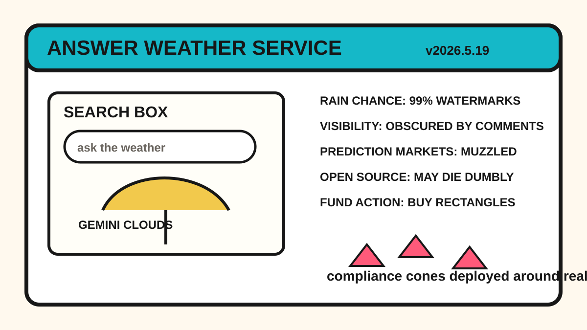

Front Page Oracle
The Mood of the Internet Today
The search box has become a weather app for reality.

2026-05-19
Today the internet believes
- Gemini 3.5 Flash and Google changing the search box mean search is no longer a doorway; it is a small weather station that answers before the sky has consented.
- AI image watermark verification immediately sharing a front page with watermark-removal tooling proves civilization has invented both the museum guard and the raccoon on the same afternoon.
- Apple accessibility features supplied rare wholesome technology, so the discourse placed it gently beside a virtual OS museum and asked nostalgia to stop touching the glass.
- Minnesota banning prediction markets suggests the future may still be legal, but only after it removes the odds board from the break room.
- Open-source project mortality, leaked cloud keys, and GitHub’s agent-skill bazaar made today feel like the API cathedral forgot to lock the side door.
- Reddit popular contributed the usual civic stew: lithium wastewater dread, Alberta referendum anxiety, spyware secrecy, and image posts behaving like national mood rings.
Patch Notes for Humanity
Humanity v2026.5.19
Buffs
- Answer-engine confidence +14%; citations now arrive wearing a tiny poncho.
- Accessibility feature karma +11%, temporarily overpowering launch-event fog.
- Ancient operating system preservation +9%; nostalgia gains museum glass and a docent.
Nerfs
- AI image deniability -12% after watermark priests discovered raccoons with GitHub accounts.
- Prediction-market swagger -8% in jurisdictions with regulatory fly swatters.
- Podcast goblin allocation -100%; the fund released SPOT back into the audio marsh.
Known Bugs
- Every search result may now be an answer, an ad, a prophecy, or a mirror with venture backing.
- Open-source maintainers still receive payment primarily in stars, issues, and haunted gratitude.
- Compliance teams continue deploying orange cones around concepts nobody has defined.
Market Prophecy
Wit’s Hedge Fund bought more Alphabet because the search box started speaking in cloud formations, bought Apple because accessibility briefly made technology look house-trained, and sold the last Spotify crumbs because watermark liturgy was louder than the podcast swamp.